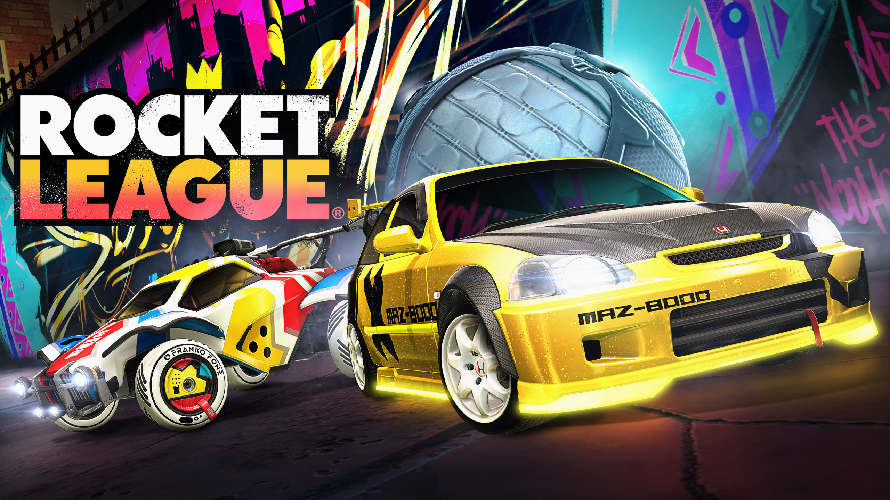

Biografía
Hola, mi nombre es Sergio y soy un estudiante de programación, en 2019 termine bachillerato en un instituto de Torrejón de Ardoz, Madrid, y ahora estoy terminando el grado superior de desarrollo de aplicaciones web. Mis pasatiempos favoritos son ver anime y hacer deporte en general aunque el que mas me apasiona es el baloncesto, también dedico gran parte de mi tiempo libre a aprender cosas nuevas relacionadas con la tecnología como noticias de hardware nuevo, noticias de cyberseguridad, etc.
Mis 5 actividades favoritas
- Jugar al baloncesto
- Jugar videojuegos
- Ir al gimnasio
- Ver notiticas de informática
- Ver anime
| Counter-Strike: Global Offensive | 990 horas | |
| Grand Theft Auto V | 528 horas | |
| Player Unknown's Battlegrounds | 209 horas | |
| Black Desert | 205 horas | |
|  | Rocket League | 197 horas |
| Cyberpunk 2077 | 128 horas | |
| NBA 2K20 | 124 horas | |
 |
Horizon Zero Dawn | 122 horas |
 |
Euro Truck Simulator 2 | 121 horas |